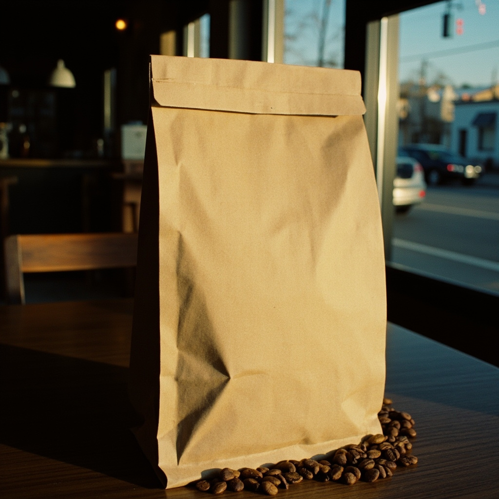

Профсоюзная, 23
Пн–Пт 7:30–21:00
Большой зал с пекарней и обжаркой, 18 мест, розетки у левой стены.
Будни 7:30–21:00 · Сб, Вс 9:00–21:00
Как дойти ↗Кофейня и пекарня в Казани. Открываемся, когда выходит первый хлеб.
Капучино 0,3
В часы работы

Открываемся в 7:30, когда из печи выходит первый хлеб.
Закваску ставим в 22:00, тесто уходит в печь в 5:40. Хлеб на дикой дрожже, второй день выдержки: 400 г за 340 ₽.


Печём зерно на барабанном ростере. Обжарка идёт 11 минут, в кофейню зерно попадает в тот же день к 15:00.
Иргачеффе
Чёрный чай, лимон, жасмин. Светлая обжарка, под фильтр.
светлаяУила
Карамель, вишня, фундук. Средняя обжарка, молоко и эспрессо.
средняяМинас-Жерайс
Какао, сливочность, без кислоты. Тёмная обжарка для молочных.
тёмная
На Профсоюзной и на Островском. Пока стрелка не дошла до полудня, сырники ещё есть.
Цены в рублях. Кофе наливаем 250 мл, двойной шот плюс 40 ₽.
Эспрессо16040 мл, тёмная обжарка недели
Капучино 0,3230на альтернативном молоке
Раф290на кокосовом молоке, 200 мл
Фильтр210270 мл, зерно недели
Сезонный с облепихой320на стекле, пока не разобрали
Ассам чёрный210заваренный на гайвани, 400 мл
Улун молочный240холодный, 400 мл
Травяной сбор220мята, смородина, тимьян
Облепиха с имбирём260свежий, с корицей
Какао250на альтернативном молоке
Круассан с миндалём190выпекаем в 7:30
Синнабон260корица и кардамон, в 12:00
Хлеб на закваске340400 г, два дня выдержки
Багет с кунжутом220к 17:00, пока есть
Шарлотка с яблоками280порция, 180 г
Кекс на рисовой муке200без глютена, без сахара
Воду набираем в стакан без счёта.
Сезонный напиток меняем по вторникам вместе с обжаркой. Аллергены и состав спрашивайте у бариста, на стойке есть тетрадка.

Пн–Пт 7:30–21:00
Большой зал с пекарней и обжаркой, 18 мест, розетки у левой стены.
Будни 7:30–21:00 · Сб, Вс 9:00–21:00
Как дойти ↗
Пн–Пт 7:30–21:00
Десять мест у окна на парк, всё на вынос. Выпечка в 7:30 и 12:00.
Будни 7:30–21:00 · Сб, Вс 9:00–21:00
Как дойти ↗Кофе-брейк от 12 человек, 640 ₽ с человека. Заявку принимаем до 18:00 накануне.